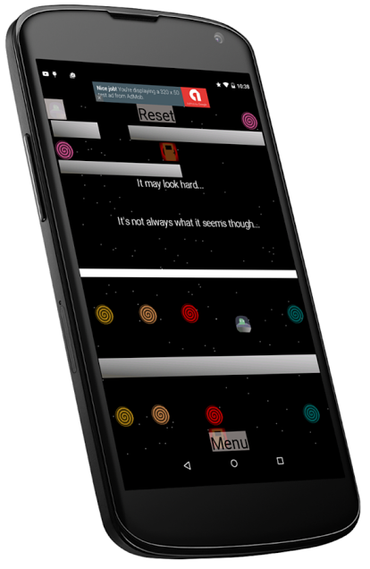

Mobile Games
2D Racer
AntiVerse is a simple puzzle game originally made for Ludum Dare 30 as Connected Worlds. In this game, the screen is split in two, and you must make try to reach the end on both screens. You control both characters at the same time, but the worlds are slightly different. You must use the walls and other obstacles to get both to the end at the same time.
Download: